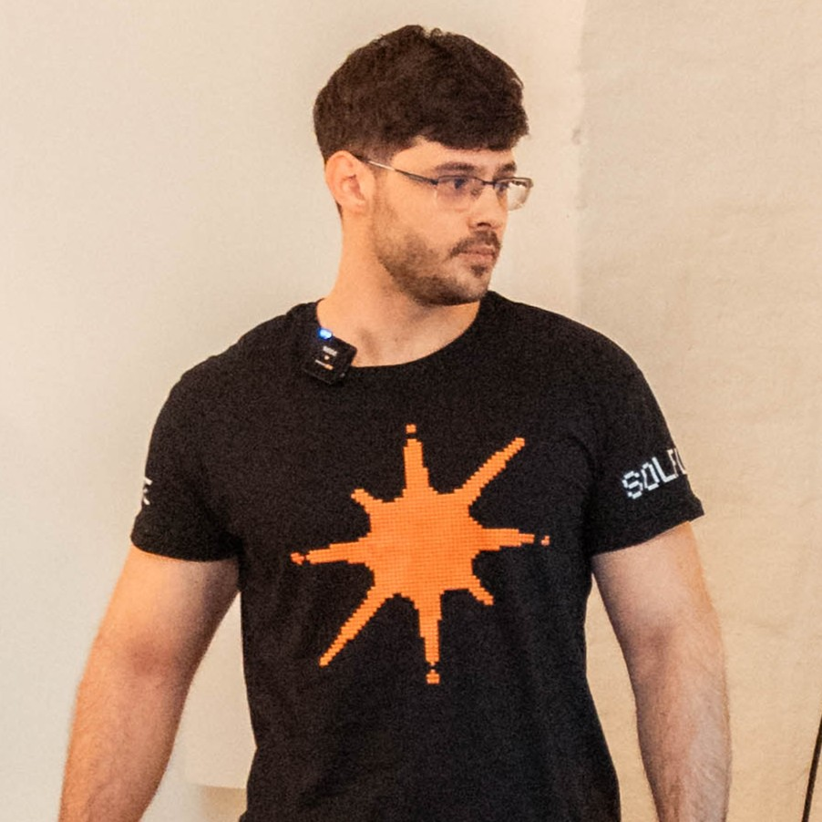

Human-readable multisig.
WHAT SIGNERS SEE TODAY
Four multisig hacks. Hardware wallets in every one. Signers couldn't read what they signed.
BYBIT
FEB 2025
$1.46B
Lazarus pushed malicious JS into Safe's AWS-hosted frontend; signers' Ledgers blind-signed a delegatecall the UI hid as a 30,000 ETH transfer.
DRIFT
APR 2026
$285M
DPRK social engineering over 6 months; Squads multisig signers pre-signed durable-nonce governance transactions they couldn't fully verify on their hardware.
WAZIRX
JUL 2024
$235M
Liminal-managed Gnosis Safe UI displayed one transaction; signers approved another that swapped the Safe's implementation for a malicious contract.
RADIANT
OCT 2024
$50M
Malware made the Safe UI show a routine config change while signers' hardware wallets signed transferOwnership on the lending pool.
Intent Definitions
Auto-generate governance rulesets from program IDL. Every action gets a human-readable template.
Plain-English Signing
Signers approve via signMessage. The wallet renders the action as text — on a hardware wallet, on the device itself, outside any compromised host.
On-Chain Verify
Program reconstructs the expected message from state, verifies the signature via Solana's native ed25519 precompile. Sub-cent cost. Tampering → signature mismatch → reject.
EVERY MULTISIG TODAY
LUCID ON YOUR LEDGER
STACK
KEY FEATURES
| Squads | Realms | Lucid | |
|---|---|---|---|
| Multisig governance | ✓ | ✓ | ✓ |
| Time-locked execution | ✓ | ✓ | ✓ |
| Hardware wallet support | ✓1 | ✓ | ✓ |
| Human-readable on device | ✗ | ✗ | ✓ |
| On-chain tamper detection | ✗ | ✗ | ✓ |
1 Squads + Ledger requires blind-signing enabled.
Read what you sign.

Darko Panic · darko@campfire.money
Senior Blockchain Engineer · Rust / Solana
Currently shipping €85M+ tokenized real estate on Solana — 233 properties, 5 countries, ~1,400 investors.
Program: LUC5TbUhLpT2dZuC2qA4vMZdxJXsbcsUVejTqLJBJWR